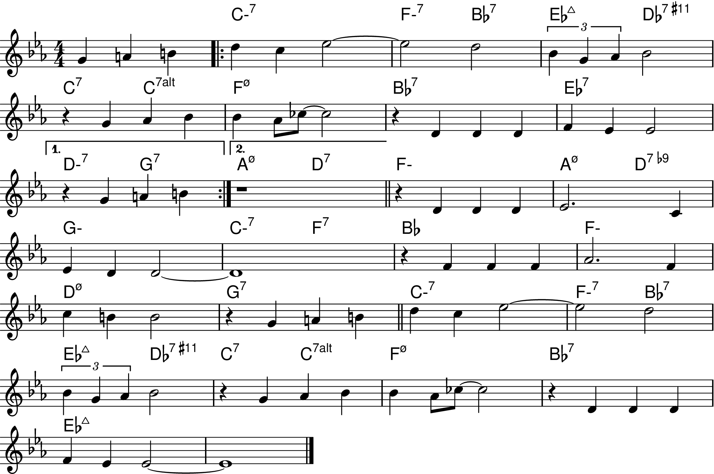
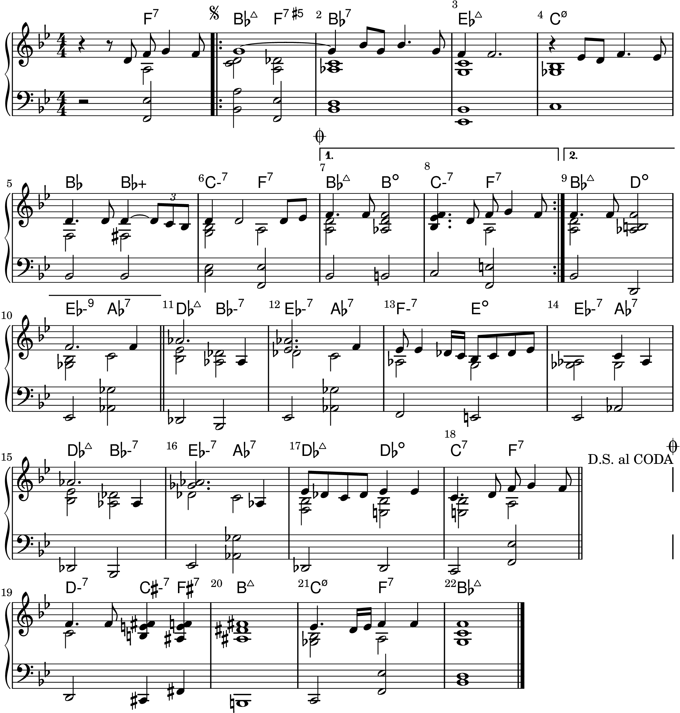
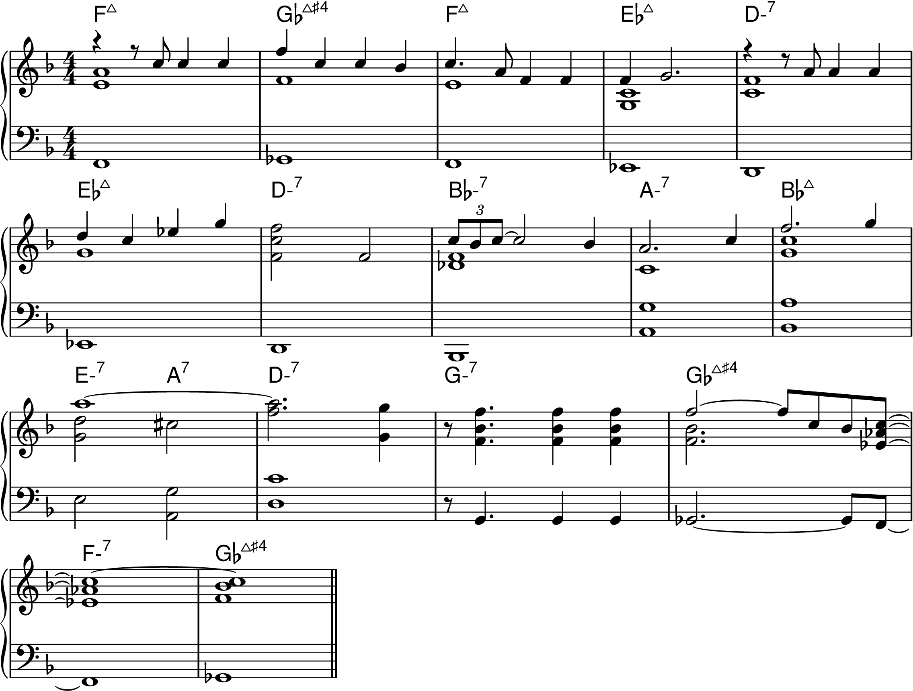
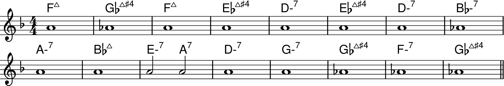

Chapter 17: Song Form and Composition
Visualizer:
None
Waterfall
Piano Roll
Back to Top
Expand all
Collapse all
Determining a Son's Form
Figure 17-1

Jazz Composition and Song Form
Billy Strayhorn's "My Little Brown Book"
Figure 17-2

Sam Rivers' "Beatrice"
Figure 17-3

Figure 17-4
